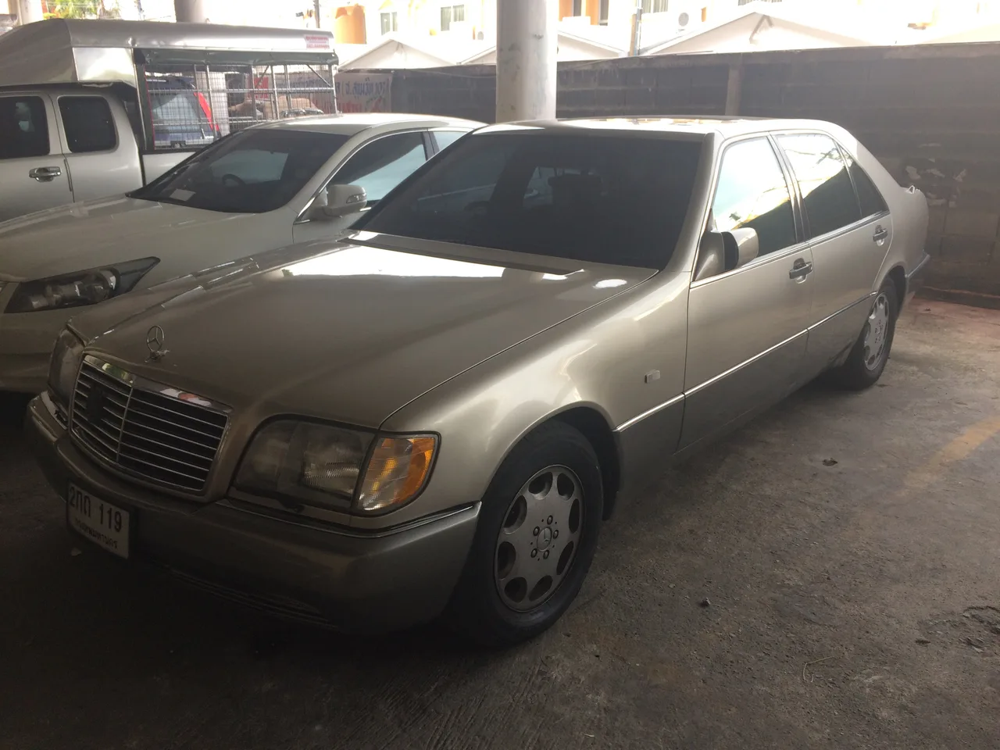
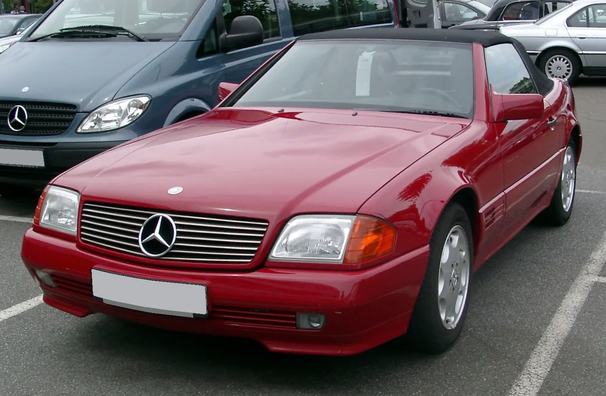

▲ 클래식카는 실물로 봐야 크기와 비례가 읽힌다. 박물관이 존재하는 이유이기도 하다 ⓒ Davide Oliva, Wikimedia Commons (CC BY-SA 2.0)
드라이브 코스는 대개 풍경으로 정해집니다. 바다, 단풍, 억새, 고갯길입니다.
목적지 자체가 자동차인 코스도 있습니다. 실내라서 날씨를 타지 않고, 아이를 동반한 가족 여행에서도 성립합니다.
1. 용인 — 에버랜드 옆입니다
삼성화재 모빌리티뮤지엄은 경기도 용인시 처인구 에버랜드로376번길 171에 있습니다. 1998년 5월 1일 삼성화재 교통박물관으로 문을 열었고, 2023년 8월 1일 리뉴얼과 함께 지금의 이름으로 바뀌었습니다. 옛 이름으로 검색하는 경우가 아직 많습니다.
| 항목 | 내용 |
|---|---|
| 위치 | 경기 용인시 처인구 에버랜드로376번길 171 |
| 평일 | 09:00 ~ 17:00 (입장마감 16:00) |
| 주말 | 10:00 ~ 18:00 (입장마감 17:00) |
| 휴관 | 매주 월요일 · 설·추석 연휴 · 1월 1일 |
| 입장료 | 용인시 안내 기준 대인 1만 원 · 소인(24개월 이상) 8천 원 |
📍 월요일 휴관을 꼭 확인하세요
박물관 계열 시설은 월요일 휴관이 관행처럼 굳어 있습니다. 주말 일정이 어긋나 월요일로 미루면 헛걸음이 됩니다.
명절 연휴 전체가 휴관이라는 점도 주의할 부분입니다. 연휴 나들이 코스로 잡기 어렵다는 뜻입니다.
수도권에서 접근성이 좋다는 점이 가장 큰 장점입니다. 에버랜드 권역이라 주변 도로가 정비돼 있고 주차 인프라도 갖춰져 있습니다.
2. 제주 — 100여 대가 한자리에
제주에는 세계 자동차 & 피아노 박물관이 있습니다. 전 세계에서 수집한 100여 대의 자동차를 전시합니다.
제주 여행에서 비가 오는 날의 대안으로 자주 꼽히는 곳입니다. 해안 드라이브와 오름 위주로 짠 일정은 날씨에 그대로 흔들리기 때문입니다.

▲ 1990년대 대형 세단. 지금 기준으로 보면 크기와 비례가 완전히 다르다 ⓒ Wikimedia Commons
3. 사진으로 보던 차를 실물로 볼 때
자동차는 사진과 실물의 차이가 큰 물건입니다.
특히 크기가 그렇습니다. 사진에서는 거대해 보이던 차가 실물에서는 의외로 작고, 그 반대도 흔합니다. 1960~70년대 스포츠카는 지금 기준으로 보면 대부분 훨씬 작습니다.
📍 옛날 차가 작아 보이는 이유
충돌 안전 기준이 강화되면서 차체는 계속 커졌습니다. 범퍼 구조·에어백·측면 보강재가 모두 공간을 차지합니다.
1970년대 소형차와 현재 소형차를 나란히 두면 한 체급 이상 차이가 납니다. 실물을 봐야 이 변화가 체감됩니다.

▲ 1990년대 준중형 세단. 현재 같은 급 모델과 비교하면 폭과 높이가 확연히 다르다 ⓒ Wikimedia Commons
4. 가족 여행에서 성립하는 이유
| 항목 | 박물관 | 야외 드라이브 코스 |
|---|---|---|
| 날씨 | 무관 | 비·바람에 취소 |
| 체류 시간 | 1~2시간으로 조절 가능 | 이동 시간이 고정 |
| 주차 | 전용 주차장 | 명소는 포화 |
| 편의시설 | 화장실·휴게 공간 실내 | 제한적 |
어린 자녀를 동반한 여행에서 특히 유리합니다. 야외 코스는 날씨와 기온에 그대로 영향을 받지만, 실내 전시는 일정이 흔들리지 않습니다.
5. 코스에 어떻게 끼워 넣나
박물관 단독으로 하루를 채우기는 어렵습니다. 관람 시간이 보통 1~2시간이기 때문입니다.
| 조합 | 내용 |
|---|---|
| 오전 실내 + 오후 야외 | 더운 시간대를 실내로 피함 |
| 비 예보일 대체 | 원래 코스가 취소됐을 때의 예비안 |
| 귀갓길 경유 | 이동 경로상에 있으면 추가 이동 없음 |
예비안으로 미리 넣어두는 방식을 권합니다. 여행 계획에 실내 코스가 하나도 없으면, 비가 오는 날 갈 곳을 현장에서 찾게 됩니다.

▲ 1990년대 로드스터. 단종된 형태의 차는 실물로 볼 기회 자체가 줄어든다 ⓒ Wikimedia Commons
6. 방문 전 확인할 것
| 항목 | 이유 |
|---|---|
| 휴관일 | 월요일·명절 연휴·1월 1일 |
| 입장 마감 | 평일 16:00 · 주말 17:00 |
| 전시 교체 | 보유 차량 전부가 상시 전시되지는 않음 |
| 촬영 규정 | 플래시·삼각대 제한이 있을 수 있음 |
7. 정리
삼성화재 모빌리티뮤지엄(옛 삼성화재 교통박물관)은 경기 용인시 처인구 에버랜드로376번길 171에 있습니다. 평일 09:00~17:00(입장마감 16:00), 주말 10:00~18:00(입장마감 17:00) 운영하며 월요일·설·추석 연휴·1월 1일은 휴관입니다. 입장료는 용인시 안내 기준 대인 1만 원, 소인 8천 원입니다.
제주에는 세계 자동차 & 피아노 박물관이 있으며 전 세계에서 수집한 100여 대를 전시합니다. 해안 드라이브 위주 일정이 날씨로 무너졌을 때의 대안으로 자주 쓰입니다.
박물관 코스의 장점은 날씨에 흔들리지 않는다는 점입니다. 관람 시간이 1~2시간이라 단독으로 하루를 채우기는 어렵고, 비 예보일의 예비안이나 귀갓길 경유지로 넣는 방식이 잘 맞습니다.